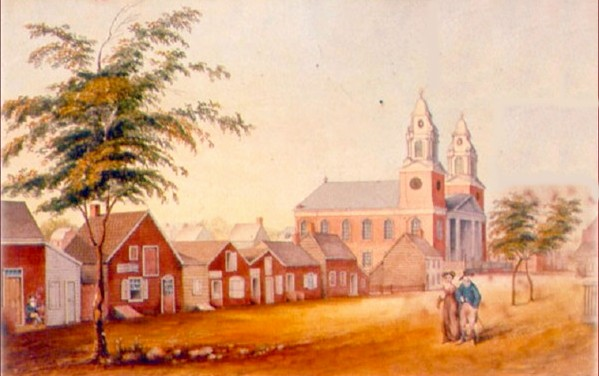

North
Pearl Street to the North Church
(Click on any feature)

Watercolor of a drawing of "upper" North Pearl Street as James Eights (who grew up on Pearl Street) recalled it during the early nineteenth century. This is a copy of an widely reproduced print in the collection of the Albany Institute of History and Art.
This streetscape is described in a section entitled "Albany in 1800" and printed in The Bicentennial History of Albany - which was published in 1886:
"Our next view of North Pearl street is a continuation of the west side from Canal to Patroon street. The buildings possess little interest, except the church with two steeples, the ediface of the North Reformed Dutch Church, [designed by Philip Hooker and] erected in 1798. With the exception of the church, all the other buildings have long since passed away. They were of wood, all painted red, and gave a very dull appearance to the street.
On the left is seen a portion of Vendeberg Mansion. Adjoining it was the shop of John Bantam, a blacksmith. The next building was occupied by an Irish schoolmaster named Crabbe. Back of these is seen the tool house of the church, and upon the distant eminence beyond, then known as Arbor Hill, is seen the country seat of General Ten Broeck, of the Revolution, and three years Mayor of Albany. Arbor Hill is now (1886) occupied by Thomas W. Olcott. Next to the last of the small buildings in the direction of the church was then occupied by Mc Gourghey, a chocolate manufacturer, and in the last the sexton of the church resided.
Fox Creek formerly flowed across the street (now under it) where the fence is seen, adjoining, and so between the trees. Opposite the church is seen a small building, which was then occupied by Bocking, a famous cake baker. The two little figures in the picture represent a fashionably-dressed couple in Albany in 1805. The lady has not yet 'found her waiste,' and the gentleman has his roundhead hat, narrow-skirted coat and huge white-topped boots, then just beginning to be worn."
Early Albany Maps and Streetscapes
Home | Site Index | Navigation | Email | New York State Museum
first posted: 2/20/04; last updated 4/5/12
|